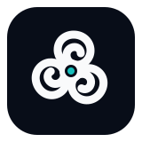

Diagnostica
Aterriza cliente, oferta, tono, objeciones y diferenciadores antes de pedirle contenido a la IA.

epifanIAPara negocios de servicios que venden por Instagram y WhatsApp
Epifania transforma tu experiencia, oferta y preguntas frecuentes en un sistema mensual de ideas, guiones y respuestas. Sin improvisar, sin textos genéricos y sin contratar una agencia.
Guion breve que conecta valor, criterio y CTA a WhatsApp.
Contenido de proceso para reducir dudas antes de la consulta.
Un sistema, no una carpeta de prompts
No necesitas convertirte en creador. Necesitas una forma repetible de explicar lo que haces, demostrar valor e invitar a conversar.
Aterriza cliente, oferta, tono, objeciones y diferenciadores antes de pedirle contenido a la IA.
Ordena temas por intención: atraer, educar, construir confianza o abrir una conversación comercial.
Genera guiones, captions, historias y respuestas de WhatsApp con criterios para evitar contenido genérico.
Publica, registra preguntas reales y mejora el siguiente mes con señales de tus propios clientes.
Así se ve por dentro
Cada instrucción incluye datos de tu negocio, el momento del cliente y criterios de calidad. El resultado se revisa antes de publicar: la IA propone; tú conservas la voz y la verdad.
Explorar los 5 prompts gratuitosActúa como estratega de contenido para mi negocio de servicios.
Oferta: [qué vendes]
Cliente: [a quién ayudas]
Objeción real: [qué duda escuchas]
Prueba disponible: [proceso, experiencia o caso]
Crea un guion de 45 segundos que ayude al cliente a decidir si esta solución es adecuada para él. No inventes resultados ni uses urgencia falsa. Cierra invitándolo a hacer una pregunta por WhatsApp.Un foco deliberadamente específico
Lo que construiremos contigo
Problemas, objeciones, pruebas, historias y ofertas propias de tu negocio.
Cada pieza tendrá objetivo, formato, idea central y llamada a la acción.
Prompts, hooks y respuestas que podrás adaptar sin comenzar de cero.
Una revisión simple para detectar exageraciones, textos genéricos y CTA débiles.
Primera cohorte de validación
Esta no es una falsa cuenta regresiva: limitamos el piloto a cinco participantes porque cada negocio recibirá acompañamiento y revisión.
$49.990
pago único en CLP
La postulación no genera cobros. Primero confirmaremos que el programa encaja con tu negocio.
Usa cinco prompts estratégicos, un calendario semanal y el checklist editorial antes de decidir.
Abrir la muestra gratuitaLa implementación individual parte desde $249.990 CLP y se cotiza según alcance.
Solicitar diagnósticoPreguntas frecuentes
No. El programa piloto te entrega estrategia, textos, calendario y acompañamiento. La grabación, diseño y publicación siguen a cargo de tu negocio.
No. Puedes aplicar el sistema con versiones gratuitas de asistentes de IA y recibirás instrucciones paso a paso.
No debería hacerlo. Los prompts incorporan límites explícitos y el sistema incluye una revisión humana antes de publicar. Tú siempre validas los hechos.
Se abrirá WhatsApp con tu información y la solicitud preparada. Revisaremos si el programa encaja, resolveremos dudas y solo entonces coordinaremos el pago.
La fecha de inicio se coordina al completar los cinco cupos. Recibirás por escrito el calendario, acceso y condiciones antes de pagar.
Programa piloto
Al enviar el formulario abriremos WhatsApp con tu solicitud preparada. Podrás revisarla antes de enviarla y no se realizará ningún cobro.